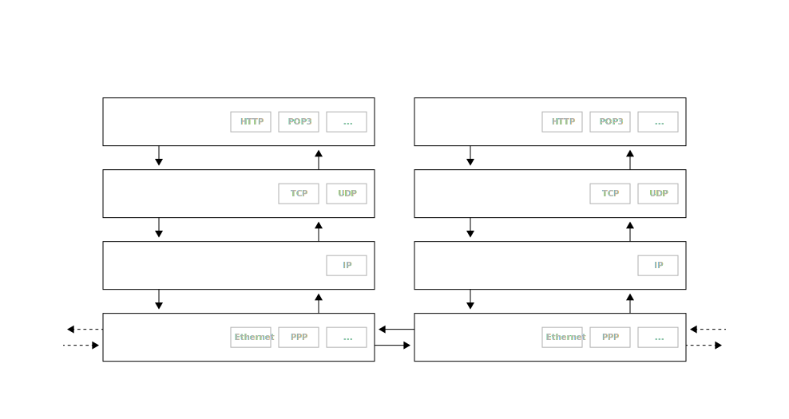
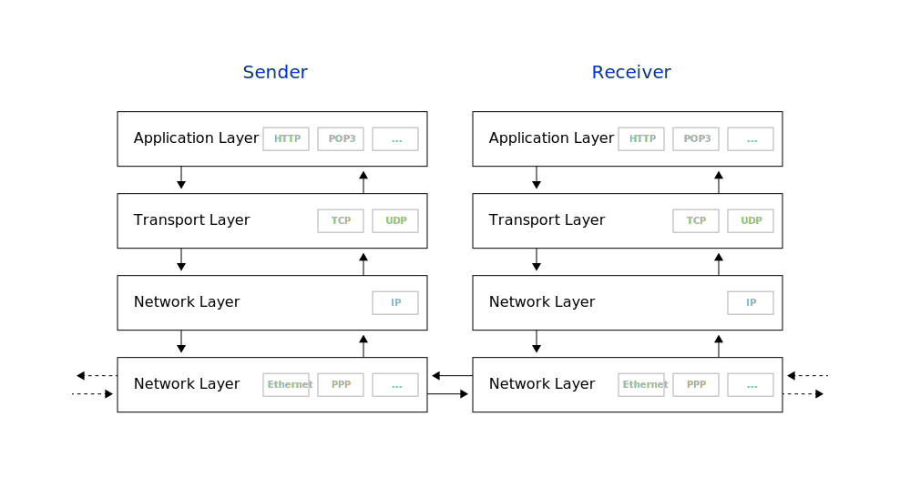
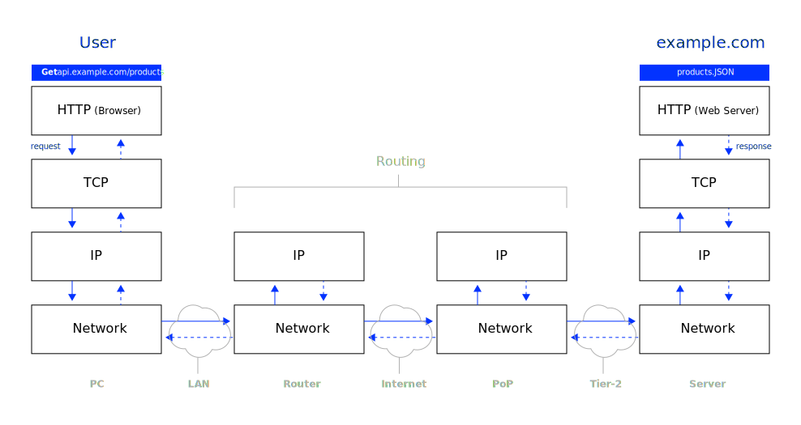
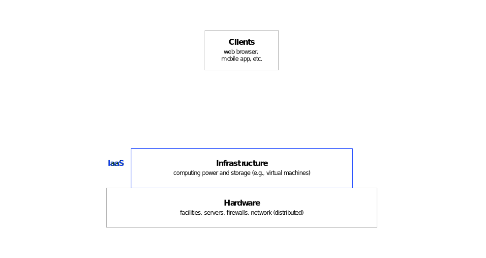
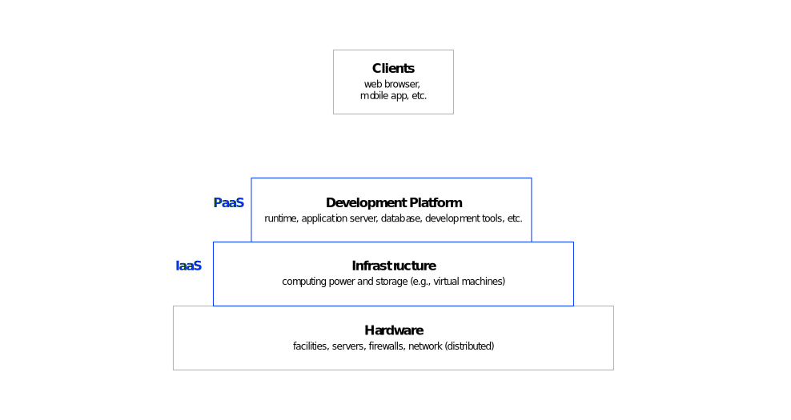
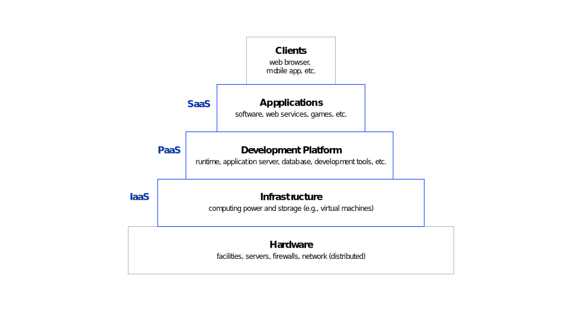
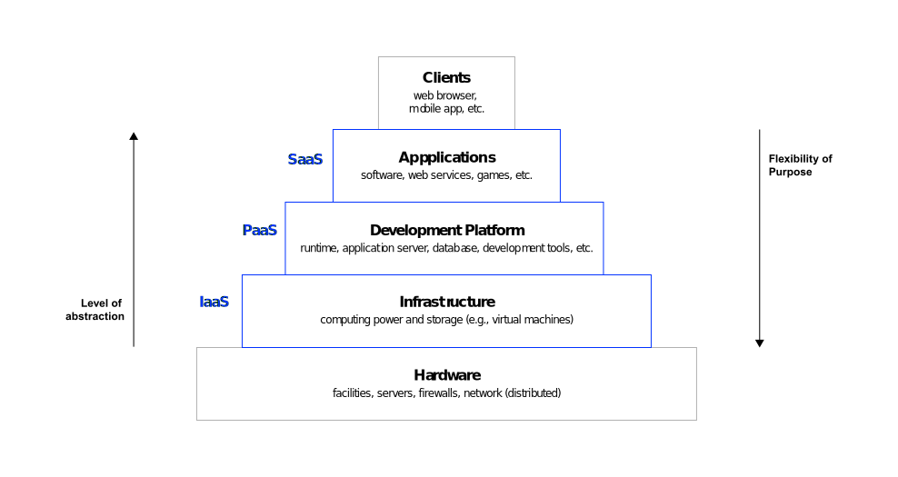

Future Technologies & Media (FTM)
Neu-Ulm University of Applied Sciences
May 31, 2024
Rotolo, Hicks, and Martin (2015) outlines five attributes that classify emerging technologies and differentiate them from other technologies:
Emerging information technologies enable multimodal and immersive systems.
Multimodality refers to the use of multiple modes of communication to to create meaning.
Multimodality implies that the use of several means of communication contributes to a better overall understanding of a message.
Immersion refers to the state of being deeply engaged, absorbed, or submerged in an environment, either physically or mentally.
Immersion implies that the consciousness of the immersed person is detached from their physical self. Immersiveness is the quality or degree of being immersive.
Stimuli that determine the immersiveness of environments created by technology are multimodal.
Visual, auditory, tactile, olfactory, and interactive.
Emerging information technologies enable intelligent and affective systems.
Intelligent systems work in complex environments, have cognitive abilities, and exhibit complex behavior.
The capacity to work in a complex environment is described as agency, cognitive abilities are, for instance, perception and language, and complex behavior is reflected, for instance, by rationality and learning.
Affective computer systems exhibit human-like capabilities of observation, interpretation and generation of emotions.
Affective systems simulate empathy — they can interpret the emotional states of humans and adapt their behavior to them, giving an appropriate response for those emotions.
Tao and Tan (2005)
Do you agree with the hypotheses outlined so far?
Take 7 minutes to remember or find examples for multimodal, immersive, intelligent and/or affective systems enabled by emerging technologies.
Try also to find examples of emerging digital technologies that are not covered by hypotheses.
Emerging information technologies enable strongly interconnected and distributed systems.
Interconnectedness refers to a formal linkage between two different systems.
Interdependence, connotes a stronger relationship in which two systems not only are connected, but depend upon one another in some way, such as functionally.
Not all interconnected systems are interdependent,
but all interdependent systems are interconnected.
A computer network is a collection of computers and devices connected so that they can share information and services.
Unlike phone lines or cable TV, which are designed for specific tasks, computer networks are flexible. They use general-purpose equipment that can handle many kinds of data. This versatility allows computer networks to support a vast and constantly evolving range of applications.
An information system (IS) …
The Internet can be defined as a public wide area computer network that uses the TCP/IP protocol suite to interconnect computer systems across the world.
The Internet provides a vast range of information resources and services such as communication (e.g., electronic mail, telephony, and instant messaging), or file transfer (e.g., file sharing, FTP, video, and audio streaming), and the metaservice WWW.
The Internet protocol suite is a set of protocols that enable communication over the Internet by specifying data transmission, addressing, and routing.
The protocol suite encompasses protocols that are designed to work together to govern how data is transferred from one system to another. The most important protocols are TCP and IP.
While IP handles actual delivery of the data, TCP keeps track of the data.



What is meant by the following concepts?
Why are they important for the functioning of the Internet?
IPv6, packet switching, router, and Domain Name System (DNS)
The internet protocol suite based on TCP/IP is the foundation upon which the modern internet is built, and its importance extends to a vast range of emergent digital technologies such as IoT, Cloud computing, and mobile computing.
TCP/IP provides a universal language, is open and standardized, is highly scalable, and allows for great flexibility.
Research what Content Delivery Networks (CDN) are and why they gained increasing importance in recent years.
Take 10 minutes to prepare a short presentation on the topic.
Emergent digital technologies facilitate more strongly interconnected systems, as they enhance
networking infrastructure, connectivity capabilities, and interoperability (e.g. through standardization).
Examples of interconnected systems are
smart cities, connected cars (Car2X), and smart supply chains.
What challenges arise from increasingly interconnected systems?
The net neutrality movement aims to keep the internet free and open.
The phrase net neutrality is used to signify the concept that the Internet is merely a carrier of online content that does not distinguish one website from another6.
A “maximally useful public information network aspires to treat all content, sites, and platforms equally” (Wu 2003, 142).
That usually means that ISPs charge consumers only once for Internet access, do not favor one content provider over another, and do not charge content providers for sending information over broadband lines to end users.
Form small groups (3-4 students per group) and take 30 minutes to work on following tasks:
A distributed system is a collection of independent computers that appear to its users as a single coherent system.
The independent computers, also known as nodes, communicate and coordinate their actions by passing messages as they do not share a common memory.
Key characteristics of distributed systems include:
autonomy, transparency, reliability, scalability, and efficiency.
Open distributed system are further characterized by their ability to integrate and interoperate with heterogeneous components, achieved through standardized interfaces and protocols that ensure different components can communicate and function together seamlessly.
The World Wide Web is an information space in which the items of interest, referred to as resources, are identified by global identifiers called Uniform Resource Identifiers (URI) (Berners-Lee et al. 2004).
Resources are hosted on servers distributed worldwide, and information is routed efficiently through various networks and ISPs to reach the end user.
Both distributed and decentralized systems involve multiple nodes working together.
However, the key difference lies in how control and decision-making are managed.
Distributed systems can have a central coordinating authority, whereas decentralized systems distribute control and decision-making equally among all nodes.
Find examples for distributed and decentralized systems and work out further key characteristics.
Form small groups and take 15 minutes to find examples and identify key differences
Distributed computing refers to the use of distributed systems to solve computational problems—a problem is divided into many tasks, each of which is solved by one or more computers that communicate with each other.
Some notable examples and use cases of distributed computing:
Training neural networks, analyzing large-scale DNA sequences, climate modelling, performing large-scale risk assessments, and swarm robotics.
Distributed systems and distributed computing are integral to the advancement of emergent digital technologies as they they provide the necessary infrastructure for …
scalability and efficiency, fault tolerance and reliability, real-time processing, data privacy and security, and cost-effectiveness.
As digital technologies continue to evolve, the role of distributed systems will only become more critical in enabling innovative applications and services across various industries.
Cloud Computing is a model which enables flexible and demand oriented access to a shared pool of configurable IT resources which can be accessed at any time and from anywhere via the Internet or a network.
The arrival of the cloud computing era can be seen as an evolutionary development in the history of computing. It is the result of the progress of various technologies, such as:
Hardware
(e.g., virtualization)
Internet technologies
(e.g., web services)
Distributed computing
(e.g., networks, clusters)
Cloud computing provides the infrastructure that fuels the digital transformation.
Enabled by the Internet and distributed computing, cloud computing




Service-based IT resources,
on demand self-service,
ubiquitous access, multitenancy, location independence,
rapid elasticity, and
pay per use billing.
Due to its inherent characteristics, cloud computing enables persons and organizations to achieve diverse benefits and opportunities, such as
Low entry barriers, access to leading edge tech, focus on core capabilities, reduced time to market, greater flexibility, and enhanced cost-control.
Cloud computing powers digital trends such as
Cloud gaming,
AI as a service,
GAIA-X as well as
Fog and Edge Computing.
Research on a hot topic
in cloud computing.
Build groups of 3 students, select either Cloud gaming, AI as a service, or GAIA-X,
and take 15 minutes to:
Be prepared to present your findings.
Interconnectedness and distributivity are crucial aspects of cloud computing.
Do developments like AI overview in search worsen the problem?
What is your opinion regarding the problems and responses discussed in the Decoder episode “Google CEO Sundar Pichai on AI-powered search and the future of the web”?
The decentralized web, often referred to as Web3, aims to restore the original decentralized nature of the internet.
Web3 is an evolving concept, which encompasses technologies broadly aimed at providing greater transparency, openness, and democracy on the web.
If a decentralized web is the future, what is the present and the past?
Reflect on the differenctes between Web 1.0, Web 2.0 and Web 3.0.
| Feature | Web 1.0 | Web 2.0 | Web 3.0 (Web3) |
|---|---|---|---|
| Focus | Information access and publishing | User-generated content and social interaction | Decentralization, user ownership, and machine understanding |
| User Role | Consumer of information | Content creator and consumer | Active participant and potential owner |
| Data Storage | Centralized servers | Centralized servers controlled by platforms | Potentially distributed storage using blockchains |
| Key Technologies | HTML, static web pages | Social media platforms, mobile web, APIs | Blockchain, cryptocurrencies, semantic web |
| Examples | Simple websites, directories | Facebook, YouTube, Wikipedia | Early stage |
Murray, Kim, and Combs (2023) propose that following four key applications could play a significant role in Web3:
Mastodon — a good example of the future of social media in Web3?
Take 15 minutes to research on Mastodon. Try to make up your mind if Mastodon is an interesting case in relation to Web 3.0 and how well it fits the Web 3.0 mold.
Prepare yourself to discuss your findings.
Lifecycle stages can be design, development, test, operation phases, for instance
Interfaces reflect the mechanisms how IS interact
Independency refers to the fact that there are no specific hardware and software requirements
Refers to the a built in failure recovery mechanism that provides reliable end to end communication
The receiver responds with an positive acknowledgements (ACK) for ever data packet received, sender retransmits packets for missing ACKs after a given time
Neut neutrality implies that, all things being equal, small content providers can deliver content just as fast, to the same people, as large content providers such as YouTube.
Key stakeholder in the net neutrality debate are, for instance, internet service providers (ISPs), content providers, consumers, government, CDNs, etc.
The internet as of today is often termed Web 2.0
Dominant internet players are the large platforms for e.g., social media, marketplaces, and CDN
The internet big five, also known as GAFAM, are Google, Amazon, Meta (formerly Facebook), Apple, and Microsoft
NFT stands for Non-fungible Tokens
DAO stands for Decentralized Autonomous Organizations